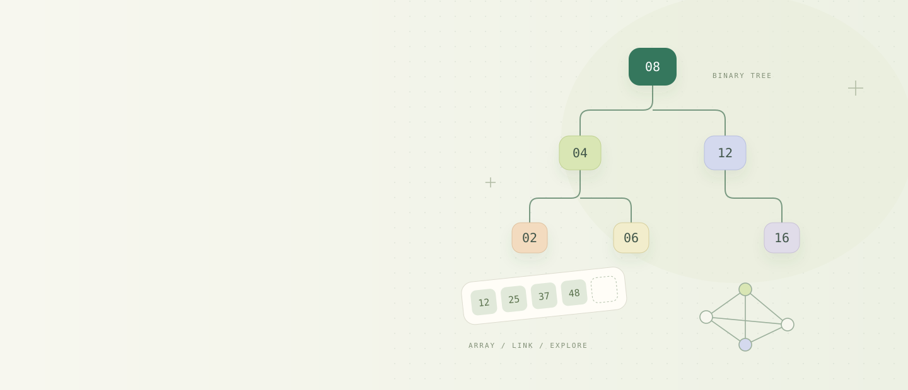

A LITTLE STRUCTURE. A LOT OF CLARITY.
把抽象的结构，
变成看得见的理解。
从一条链表，到一张图。
让代码、结构与变量一起变化，把每一步，看明白。
开始探索为 408 备考，也为真正理解
8 个章节 · 自己掌握学习节奏
8 个章节 · 自己掌握学习节奏
从这里，建立你的知识结构EXPLORE / 08
选一个章节，开始一次探索。

从一条链表，到一张图。
让代码、结构与变量一起变化，把每一步，看明白。
选一个章节，开始一次探索。